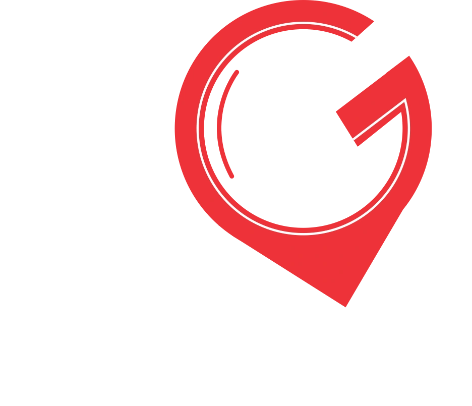
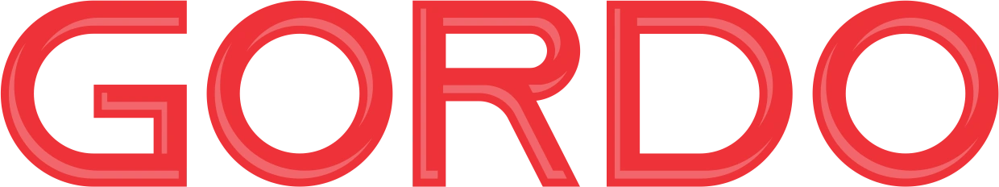
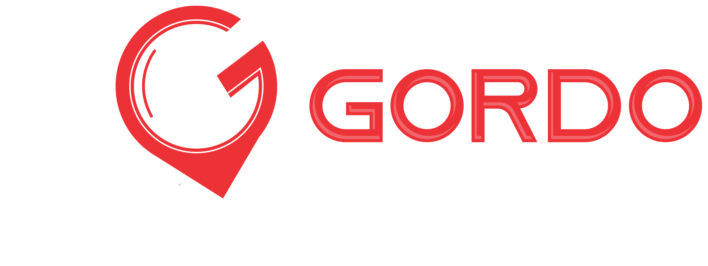

¿Qué quieres proteger
?
Elige dónde vas a instalar tu GPS
Vehículo personal
GPS 4G, alertas en tiempo real y protección anti-jammer
Motor / Pasola
Rastreo compacto pensado para dos ruedas
Flotillas / empresas
Monitorea varios vehículos desde un solo panel
Dashcam / Cámara vehicular
Video en vivo y grabación ante cualquier incidente
GPS Portátiles
Rastrea personas, mascotas o cualquier objeto de valor
Web antigua